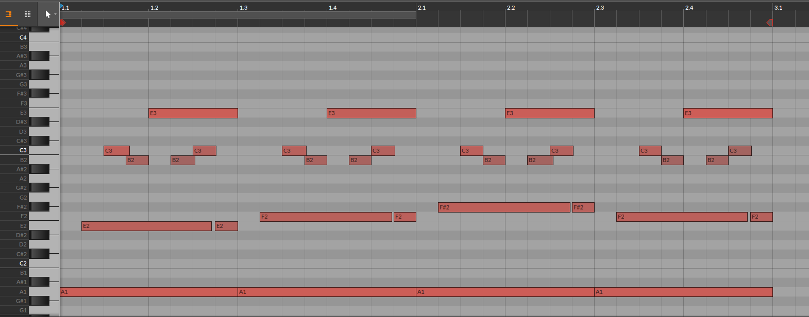

这一期是“领会编曲技法”的一讲。
此前我们学习了几种特殊的和弦，而本讲旨在了解它们的有效使用方式。我们将通过具体的模式，直接介绍流行音乐中经典的固定和弦进行，内容非常具有实操性。
由于该技法涉及细致到单音级别的微小运动，在粗犷的摇滚或电子音乐等不太注重这类声部细节的风格中较少用到，但在抒情曲（Ballad）与J-Pop中却极为常用。
[gt_radar_chart id=”gt-radar-genrechart” width=”” height=”240″ labels=”J-Pop,Jazz,Classic,Cinematic,Electronic,Pop,Rock” animation_type=”radarar”][gt_chart_data fill_color=”#2060db” stroke_color=”#2060db” data=”100,100,80,80,10,30,10″][/gt_radar_chart]
 1. 装饰和弦
1. 装饰和弦
在创作歌曲时，有时我们并不希望和弦接二连三地频繁更换，而是希望在一个和弦上沉稳地停留一段时间。但如果只是单纯重复弹奏完全相同的和弦，难免又会显得单调乏味。
在这种情况下，一种可行的手法是：在不改变和弦大框架的前提下，只让其中一个音逐步移动，以此制造出丰富的音响色彩。

这里以VIm为基础和弦，仅仅让其中一个音按照“Sol → Fa♯ → Fa → Mi”的轨迹逐步移动。贝斯没有移动，整体和声基本处于停滞状态，但由于内部声部在发生微小的改变，听起来完全不会产生倦怠感。这便营造出了一种极佳的和声平衡！
这里的关键有两点：首先，被移动的那个音必须是以为单位进行的，从而将和声变化的剧烈程度降到最低；其次，其他声部尽量保持固定，给听众一种和弦并没有发生实质性进行的印象。遵循这两条原则，就能以含蓄克制的方式为声音增添丰富的色彩。这种技法被称为线条陈词（Line Cliché）。
线条陈词 (Line Cliché) : 在某个固定的和弦内部，仅让其中一个音以半音为单位移动，在不给听众造成和弦已经发生明显进行的印象的同时，对该和弦起到装饰美化作用的技法[1]。 : “Cliché”原指“陈词滥调、老生常谈的套话”。
在按半音移动时虽然会出现带有临时记号的音符，但由于有前后顺畅的声部连接，这些色彩音也能自然地融入整体，这也是该技法的一大优势。
实际范例
这是在小三和弦上实际运用线条陈词的著名范例。由于主题是“国王的宫殿”，主歌部分以VIm–VIm–IIm–VIm为基础，在极其缓慢沉稳的和弦推进中展开。在此过程中，原声吉他以半音为单位微妙地变换组成音以制造变奏，营造出了庄严而富有奇幻色彩的氛围。
尤其在IIm处（0:44起）的动态极其典型。我们在钢琴卷帘中观察一下……


如上图所示，在保持最低音与最高音不变的同时，仅让内声部半音半音地下移，从而带来细腻的变化！这种“悄悄潜伏在内声部中移动”的构想，正是线条陈词为了将和声突兀感降到最小而最常用的手法。
大三和弦上的线条陈词
正如其名称意指“套路化的常用句式”，线条陈词存在着几种经典的固定模式。除了小和弦外，另一种常见定式是在I和弦上让五音（5th）不断上行。

由于音高在一点一点往上升，非常适合用来表达欢欣雀跃、充满期待的情感。
实际范例
这首歌在开头就使用了这种进行。“在从容舒缓的节奏中，情绪逐渐被烘托高涨”的特质与歌曲的主题非常契合。
应该移动哪个音？
只要能保持半音平滑移动，中途上行或下行都可以，线条陈词在运动形态上并没有死板的硬性规定。但在“究竟移动哪个音”上需要注意：如果移动了决定和弦基本品质的核心——三音（3rd），就会导致大和弦变小和弦、或小和弦变大和弦，造成听觉上过于强烈的反差，从而无法达成原本润物细无声的装饰目的。
这是从小三和弦出发将三音逐步上移的例子。在变为大三和弦的瞬间，整体氛围骤然大变，显然已经远远超出了“轻微装饰”的范畴。 如果原本是大三和弦，将三音上行或许还能成立，但如果是小和弦就显得很生硬……由此可见，不同和弦容易进行线条移动的音是各不相同的。
普遍而言，最稳妥好用的典型移动方式是“降低根音（Rt）”或“升高五音（5th）”。在这些移动中会途经六音（6th）或七音（7th），而这些音并不会动摇三和弦的核心骨架。
快速穿梭的线条陈词
上面的范例都是以一小节移动一个半音的慢动作展开的；但也可以在极短的时间内快速滑过，此时它能起到为接续下一个和弦蓄力助推的效果。
这是一个简单的6-2-5-1进行，但由于缺乏动态显得十分平淡。如果钢琴在其中插入线条陈词……
看！音乐中顿时自然流淌出一股含蓄却富有推动力的律动感！
这里我们选择了如下的运动方式：
| 和弦 | 运动方式 |
|---|---|
| VIm | 逐步降低根音（Rt） |
| IIm | 逐步升高五音（5th） |
| V | 逐步升高三音（3rd） |
这里的关键细节是：让线条陈词的终点音，与*后续和弦的三音（3rd）*保持相邻（半音或）。即便声部只是低调地滑过，耳朵也会被该旋律线条所吸引，这样设计正是为了让后续和弦的三音显得格外鲜明突出。
顺便提一下，对于如此细微的装饰线条，在进行和弦标记与分析时，往往直接将其视为“装饰音”而不体现在和弦名称中。“细微到甚至不需要写进和弦谱里的点缀”，这正是一种十分高级优雅的技法。或者说，这种用法才最贴近线条陈词最初的核心意图。
与持续音（Pedal Point）的区别
仅就“低音不动、上方声部在动”这一表象而言，该技法与“持续音（Pedal Point）”颇为相似。
然而，持续音好比“贝斯一人苦苦坚守，上方声部肆意妄为”的失衡状态；相比之下，线条陈词则是全体声部紧密配合、力求将和声变化控制在最小幅度内。两者的思路完全不同，线条陈词更具有高度受控的编曲技法色彩。
2. 低音线条陈词（Bass Line Cliché）
从严格定义上讲，线条陈词原本是指在上方声部的某个局部悄悄移动音符的技术。然而反过来，上方声部保持固定，唯独贝斯顺滑地半音穿行的模式也十分常见，这通常被称为“低音线条陈词（Bass Line Cliché）”。这在术语上多少带有一些俗称的色彩。
小和弦体系的低音陈词

这在J-Pop副歌后半段尤为常见，是非常经典的贝斯线条。上方声部完全不发生变化，只有贝斯在移动，因此从本质上讲，也可以说是斜杠和弦章节中介绍过的“高音持续音（Soprano Pedal Point）”的一种。正因为这一和弦进行过于著名，人们才专门赋予了它“低音线条陈词”的名字。
虽然上方声部基本保持VIm，但也常常配合贝斯做微调，因此衍生出了非常多的变体。
DREAMS COME TRUE的《温柔的吻》（やさしいキスをして）在主歌中便使用了该模式的变体（相当于“直到你入睡”那部分的旋律段落）。它能营造出一种非常露骨的悲伤凄美感，与J-Pop的美学极其契合。
在欧美音乐中，齐柏林飞艇（Led Zeppelin）的《Stairway to Heaven》当属最负盛名的范例。在这首歌里，随着贝斯的移动，吉他也随之调整了和弦音，严格来说已经不能算作纯粹的线条陈词了。但无论如何，作为标志性的经典模式，了解它百利而无一害。
用于进行的后半段
且不论是否将其严格归类为陈词，这一进行中半音平滑下行的线条确实极具感染力。在J-Pop中，常常在副歌开头使用常规进行，而在副歌尾声或者一段进行的末尾，引入这种低音陈词。
例如《时常请想起我》（時々 思い出してください）或《眼泪闪闪☆》（涙がキラリ☆），都是借此非常直观地表达“副歌马上要收尾了哦”的讯息。而在《深夜纯洁》（真夜中は純潔）中，则是为了将这套进行的时尚爵士感发挥到极致，把该陈词嵌入到4-3-6进行的“6”的位置，构成了4小节的循环。
大和弦体系的低音陈词
在大和弦体系中，同样存在着经典的半音低音线条模式。虽然这已经与“线条陈词”最初的词源定义相去甚远了。

有时这4小节会完整使用，有时则只截取前半部分的2小节。它也有很多细微的变体，比如将最后一个和弦从斜杠和弦换为常规的V级和弦等。 在保持上方和弦不变的同时低音不断移动，结果便催生出了许多平时难得一见的新颖和弦。它引入了大量的调外和弦，极大地丰富了音乐的调色板，因而频繁应用于抒情曲（Ballad）中。
这就是典型的例子。贝斯线条移动步幅极小因此极其顺滑，加之大量调外和弦的涌入使情绪极为饱满。这两点都堪称抒情曲的绝配。
这些是类似的曲例。虽然各自在编曲上做了一些细节调整，但总体上都以这种低音陈词作为框架模板。
3. 线条陈词的使用时机
“Cliché”本意是“老生常谈的套话、陈腔滥调”。正如听过前面的音频所感受到的那样，线条陈词是一种只要一听就能立刻辨识出来的极具辨识度的进行。
正因如此，一旦决定使用它，最好就彻底、大方地全面使用。《温柔的吻》在主歌中几乎不厌其烦地反复使用；大调体系的低音陈词也往往直接作为副歌开头的杀手锏。可以说，不妨抱着“在这一段里我并不打算依靠和弦进行的原创性取胜，而是要靠它的调度编配以及在上面写出怎样精彩的旋律来决胜负”的心态去运用它。
总结
- 在单一和弦上，让某个声部按半音移动的装饰技法称为“线条陈词（Line Cliché）”。
- 控制和弦整体质感的变化至关重要，需要尽可能固定其他声部，并避免移动三音（3rd）等关键音。
- 贝斯线条以半音移动的模式，虽然与原本意义上的线条陈词略有出入，但作为经典技法同样极具实用价值。